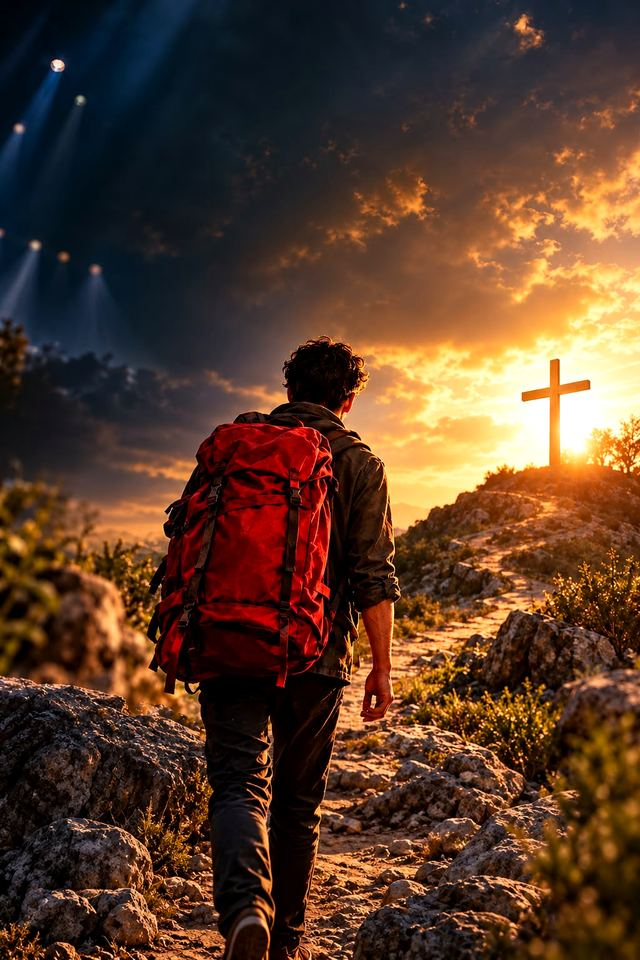
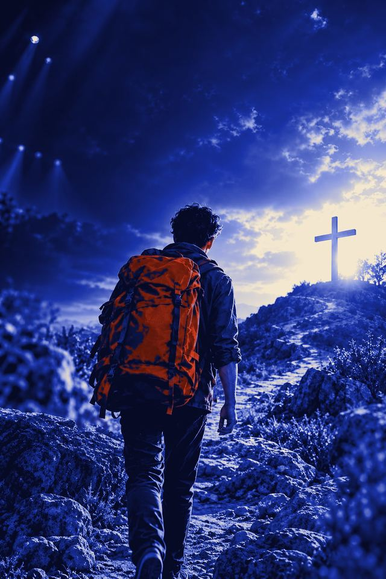
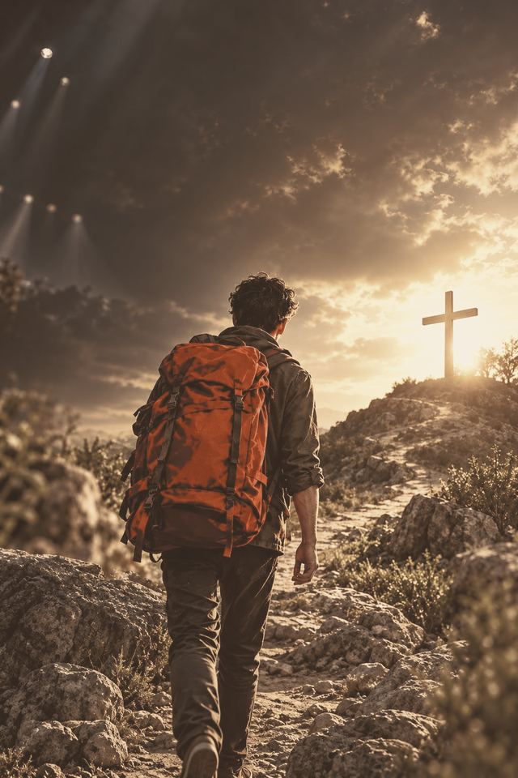

-

Concept 1
Gouden uur
De foto in warm avondlicht, als filmposter met lichtbundels, aftiteling en een filmstrip als galerij.
Bekijk concept 1 → /v1/ -

Concept 2
Toneelaffiche
De foto als kobalt affichedruk. Een volgspot onthult het gouden origineel; enorme smalle letters en een draaiende ticketbadge.
Bekijk concept 2 → /v2/ -

Concept 3
dag 1 — onderwegPelgrimsdagboek
De foto als sepia-afdruk met inktnotities, een pelgrimspas met stempels en bagagelabels voor de cast.
Bekijk concept 3 → /v3/